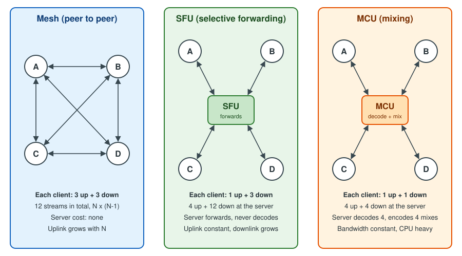

Topologies: Mesh, SFU and MCU
|
This content was generated with the assistance of AI and should be verified against the official documentation before being relied on in production. |
A WebRTC peer connection joins exactly two endpoints. A videoconference has more than two, so the application must decide how the many peer connections are arranged: every participant connected to every other (a mesh), every participant connected to a server that forwards packets (a selective forwarding unit, SFU), or every participant connected to a server that decodes, mixes and re-encodes (a multipoint control unit, MCU). The choice decides how much bandwidth each client needs, how much CPU each client and the server spend, whether you can record, which end-to-end encryption options exist and what the service costs to run. This page explains the three topologies and their hybrids with the arithmetic, the wire behaviour and the RTP mechanisms involved, tells you how to choose, and compares the media servers you would run. It is the decision page that sits between the connectivity pages and the server pages for mediasoup, LiveKit, Janus and Jitsi and Pion and aiortc.
Versions and specifications were checked on 2026-10-24. The topology vocabulary comes from the IETF informational
RFC 7667 (RTP Topologies). The mechanisms used here are the W3C WebRTC 1.0 Recommendation (2025-03-13 edition),
simulcast in RFC 8853 with restriction identifiers in RFC 8851, audio levels in RFC 6464 and RFC 6465, keyframe
requests in RFC 4585 and RFC 5104, and JSEP in RFC 9429. The servers compared are mediasoup 3.31.0, LiveKit 1.13.10,
Janus 1.4.3, Jitsi Videobridge from the 2.3 line (release stable/jitsi-meet_11248), Pion 4.2.25 and aiortc 1.15.0. The
examples were run on Node.js 24 with ws 8.22.0 and puppeteer-core 25.16.0 driving Chrome 155 with fake camera and
microphone devices.
Which scenarios use it
-
Huddle (the videoconference) is the scenario this page is about. It uses a mesh for rooms of up to four participants when nobody records, and an SFU (mediasoup, with a LiveKit variant) for everything larger or recorded.
-
Pixel Arena (the game) normally uses a client-server design over WebSocket or data channels, not a media topology. The same mesh versus server question appears for its optional voice chat, and the arithmetic below applies to peer-to-peer data channel fan-out too (see Data Channels).
-
Chatterbox (the chat) does not use media topologies. Its WebSocket protocol is described on Message Design and Serialization; a call button inside it would hand over to Huddle’s signalling.
The three topologies at a glance

The figure shows four participants, A to D. In the mesh every pair of clients exchanges media directly, so each client uploads its camera three times and downloads three streams. Through an SFU each client uploads once and downloads one stream per remote participant, while the server only forwards packets. Through an MCU the server decodes all inputs, composes one picture and one audio mix per receiver, so each client uploads once and downloads once. The price moves from the clients (mesh) to the network (SFU) to the server CPU (MCU).
Mesh
In a mesh each participant opens one RTCPeerConnection to every other participant and sends the same camera and
microphone to each of them. There is no media server: the signalling server only relays offers, answers and ICE
candidates (the signalling page covers the
exchange), and a STUN or TURN server is needed only to reach peers behind NAT.
The arithmetic
For N participants the mesh has N times (N minus 1) directed media streams, that is N-1 uploads and N-1 downloads for each client. With one 720p camera at 1.2 Mbit/s and one Opus microphone at 40 kbit/s, a 4-person call costs each client about 3.7 Mbit/s up and the same down. An 8-person call would cost 8.7 Mbit/s each way, more than most home uplinks carry. The cost is not only bandwidth: every outgoing peer connection runs its own video encoder, so the CPU and battery cost of encoding also grows with N-1, which is why phones suffer first. Browsers encode per sender, so there is no shared encode across the peer connections of a mesh, and the quality of each stream is adapted per connection by the congestion controller, which makes the picture quality of one participant differ between viewers.
The calculator in the first example prints these numbers for any bitrate, so you can size a room before choosing a topology.
Strengths and limits
Strengths: no server media cost, the lowest possible latency (a direct path where ICE finds one), the simplest deployment (a signalling server and a STUN server), and media that is end-to-end encrypted by default because DTLS-SRTP terminates in the two browsers. Limits: the uplink and CPU grow with the number of participants, there is no server-side recording or composition, quality adaptation is per link, and every participant must be able to connect to every other (a single participant behind a symmetric NAT without TURN breaks one link per peer). Mesh therefore suits 1:1 calls and small rooms, and Huddle caps it at four participants.
Example 1: a stream and bandwidth calculator
The script below compares the three topologies per participant and in total for any room size. The SFU row assumes the sender uploads three simulcast layers (150, 500 and 1200 kbit/s), which is why an SFU uplink is higher than a single-stream uplink at small sizes and lower than a mesh from three participants on.
// huddle-bandwidth.mjs - stream counts and bitrates per Huddle topology.
// Usage: node huddle-bandwidth.mjs [videoKbps] [audioKbps]
const videoKbps = Number(process.argv[2] ?? 1200); // one 720p camera layer
const audioKbps = Number(process.argv[3] ?? 40); // one Opus stream
const simulcast = [150, 500, videoKbps]; // low, medium, high layers (kbit/s)
const media = videoKbps + audioKbps;
const mesh = (n) => ({ up: n - 1, down: n - 1, upKbps: (n - 1) * media, downKbps: (n - 1) * media, server: 0 });
const sfu = (n) => ({
up: 1, down: n - 1,
upKbps: simulcast.reduce((a, b) => a + b, 0) + audioKbps, // every layer is uploaded once
downKbps: (n - 1) * media, // one layer per remote peer
server: n + n * (n - 1), // n inbound, n*(n-1) outbound
});
const mcu = (n) => ({ up: 1, down: 1, upKbps: media, downKbps: media, server: 2 * n }); // n decoded, n mixed
const fmt = (k) => (k >= 1000 ? (k / 1000).toFixed(1) + ' Mbit/s' : Math.round(k) + ' kbit/s');
const rows = [];
for (const n of [2, 3, 4, 6, 8, 12, 25]) {
for (const [name, f] of [['mesh', mesh], ['sfu', sfu], ['mcu', mcu]]) {
const r = f(n);
rows.push({ n, topology: name, 'up streams': r.up, 'down streams': r.down,
uplink: fmt(r.upKbps), downlink: fmt(r.downKbps), 'server RTP streams': r.server });
}
}
console.log(`video ${videoKbps} kbit/s, audio ${audioKbps} kbit/s, simulcast ${simulcast.join('/')}`);
console.table(rows);Running node huddle-bandwidth.mjs prints one row per room size and topology. An excerpt:
video 1200 kbit/s, audio 40 kbit/s, simulcast 150/500/1200
n topology up streams down streams uplink downlink server RTP streams
4 mesh 3 3 3.7 Mbit/s 3.7 Mbit/s 0
4 sfu 1 3 1.9 Mbit/s 3.7 Mbit/s 16
4 mcu 1 1 1.2 Mbit/s 1.2 Mbit/s 8
8 mesh 7 7 8.7 Mbit/s 8.7 Mbit/s 0
8 sfu 1 7 1.9 Mbit/s 8.7 Mbit/s 64
8 mcu 1 1 1.2 Mbit/s 1.2 Mbit/s 16
25 mesh 24 24 29.8 Mbit/s 29.8 Mbit/s 0
25 sfu 1 24 1.9 Mbit/s 29.8 Mbit/s 625
25 mcu 1 1 1.2 Mbit/s 1.2 Mbit/s 50The SFU downlink at 25 participants is as large as the mesh downlink in this model, which is why real SFUs never send every layer of every participant: they forward only the tiles that are on screen, at the size they are shown (see SFU: selective forwarding unit). The server column grows with N squared for an SFU, which is the real scaling cost of forwarding.
Source: RFC 7667: RTP Topologies
Example 2: a four-person mesh Huddle
Huddle’s mesh mode is a complete, runnable program in three files: a room relay with the four-participant cap, the browser page that opens one peer connection per remote participant, and a driver that opens four headless Chrome pages and prints what the mesh really costs. The signalling messages are Huddle’s own and are separate from the Chatterbox chat protocol.
The server serves the page and relays signal messages by participant id. A room that already holds four peers is
refused with the application close code 4403, mirroring the code Chatterbox uses for a forbidden join.
// huddle-mesh-server.mjs - static files plus a tiny room relay for Huddle mesh mode.
// Run: npm i ws && node huddle-mesh-server.mjs
import { createServer } from 'node:http';
import { readFile } from 'node:fs/promises';
import { randomUUID } from 'node:crypto';
import { WebSocketServer } from 'ws';
const PORT = Number(process.env.PORT ?? 3000);
const MAX_MESH = 4; // Huddle refuses a fifth participant in mesh mode
const rooms = new Map(); // room -> Map(peerId -> ws)
const http = createServer(async (req, res) => {
if (req.url?.startsWith('/mesh')) {
res.writeHead(200, { 'content-type': 'text/html; charset=utf-8' });
res.end(await readFile(new URL('./huddle-mesh.html', import.meta.url)));
} else { res.writeHead(404).end(); }
});
const wss = new WebSocketServer({ server: http, path: '/signal' });
wss.on('connection', (ws, req) => {
const room = new URL(req.url, 'http://x').searchParams.get('room') ?? 'lobby';
const peers = rooms.get(room) ?? new Map();
rooms.set(room, peers);
if (peers.size >= MAX_MESH) {
ws.send(JSON.stringify({ type: 'full', max: MAX_MESH }));
return ws.close(4403, 'mesh room full');
}
const id = randomUUID().slice(0, 8);
ws.send(JSON.stringify({ type: 'welcome', id, peers: [...peers.keys()] }));
for (const other of peers.values()) other.send(JSON.stringify({ type: 'peer-joined', id }));
peers.set(id, ws);
ws.on('message', (raw) => {
const msg = JSON.parse(raw.toString());
if (msg.type !== 'signal') return;
peers.get(msg.to)?.send(JSON.stringify({ type: 'signal', from: id, data: msg.data }));
});
ws.on('close', () => {
peers.delete(id);
for (const other of peers.values()) other.send(JSON.stringify({ type: 'peer-left', id }));
if (peers.size === 0) rooms.delete(room);
});
});
http.listen(PORT, () => console.log(`huddle mesh signalling on http://localhost:${PORT}/mesh`));
export { http, wss };The page creates a peer connection per remote participant, adds the same local tracks to each, and lets the newcomer
make the offers. pc.setLocalDescription() without an argument and the negotiationneeded event are the modern
parts of the API; the page relies on the newcomer being the only offerer, so it needs no collision handling. For a
room where both sides can renegotiate, use the full pattern from
Signaling and Perfect Negotiation.
<!doctype html>
<meta charset="utf-8">
<title>Huddle mesh</title>
<video id="local" autoplay muted playsinline></video>
<div id="remotes"></div>
<script type="module">
const room = new URLSearchParams(location.search).get('room') ?? 'lobby';
const ice = { iceServers: [{ urls: 'stun:stun.example.test:3478' }] };
const peers = new Map(); // peerId -> RTCPeerConnection
let myId, ws, localStream;
localStream = await navigator.mediaDevices.getUserMedia({ audio: true, video: { width: 640, height: 360 } });
document.getElementById('local').srcObject = localStream;
ws = new WebSocket(`ws://${location.host}/signal?room=${room}`);
const send = (to, data) => ws.send(JSON.stringify({ type: 'signal', to, data }));
function connect(remoteId, initiator) {
const pc = new RTCPeerConnection(ice);
peers.set(remoteId, pc);
// one outgoing copy of the camera and microphone per remote peer: this is the N-1 uplink cost of mesh
for (const track of localStream.getTracks()) pc.addTrack(track, localStream);
pc.onicecandidate = ({ candidate }) => candidate && send(remoteId, { candidate });
pc.ontrack = ({ streams: [stream] }) => {
let el = document.getElementById('v-' + remoteId);
if (!el) {
el = Object.assign(document.createElement('video'), { id: 'v-' + remoteId, autoplay: true, playsInline: true });
document.getElementById('remotes').append(el);
}
el.srcObject = stream;
};
if (initiator) { // the newcomer offers to everybody already present
pc.onnegotiationneeded = async () => {
await pc.setLocalDescription();
send(remoteId, { description: pc.localDescription });
};
}
return pc;
}
ws.onmessage = async ({ data }) => {
const msg = JSON.parse(data);
if (msg.type === 'welcome') { myId = msg.id; msg.peers.forEach((id) => connect(id, true)); }
else if (msg.type === 'peer-joined') connect(msg.id, false);
else if (msg.type === 'peer-left') { peers.get(msg.id)?.close(); peers.delete(msg.id); document.getElementById('v-' + msg.id)?.remove(); }
else if (msg.type === 'signal') {
const pc = peers.get(msg.from) ?? connect(msg.from, false);
const { description, candidate } = msg.data;
if (description) {
await pc.setRemoteDescription(description);
if (description.type === 'offer') {
await pc.setLocalDescription();
send(msg.from, { description: pc.localDescription });
}
} else if (candidate) await pc.addIceCandidate(candidate);
}
};
// Report what the mesh costs: outbound-rtp streams and bytes sent across all peer connections.
window.meshReport = async () => {
let outVideo = 0, outAudio = 0, inVideo = 0, bytesSent = 0, connected = 0;
for (const pc of peers.values()) {
if (pc.connectionState === 'connected') connected++;
for (const s of (await pc.getStats()).values()) {
if (s.type === 'outbound-rtp') { s.kind === 'video' ? outVideo++ : outAudio++; bytesSent += s.bytesSent; }
if (s.type === 'inbound-rtp' && s.kind === 'video') inVideo++;
}
}
return { id: myId, peers: peers.size, connected, outVideo, outAudio, inVideo, bytesSent };
};
</script>The driver imports the server (which starts listening), launches Chrome with a fake camera and microphone, opens four pages in the same room, waits for the ICE and DTLS handshakes and asks every page for its report. It finishes by showing the refusal of a fifth participant.
// run-mesh.mjs - starts the server, opens N headless Chrome pages and prints the mesh stream counts.
import puppeteer from 'puppeteer-core';
import { http } from './huddle-mesh-server.mjs';
const N = Number(process.argv[2] ?? 4);
const browser = await puppeteer.launch({
executablePath: '/Applications/Google Chrome.app/Contents/MacOS/Google Chrome',
headless: true,
args: ['--use-fake-device-for-media-stream', '--use-fake-ui-for-media-stream', '--no-first-run'],
});
const pages = [];
for (let i = 0; i < N; i++) {
const page = await browser.newPage();
await page.goto(`http://localhost:${process.env.PORT}/mesh?room=demo`);
await page.waitForFunction(() => window.meshReport, { timeout: 15000 });
pages.push(page);
await new Promise((r) => setTimeout(r, 800));
}
await new Promise((r) => setTimeout(r, 4000));
for (const p of pages) console.log(JSON.stringify(await p.evaluate(() => window.meshReport())));
// a fifth participant is refused with close code 4403
const fifth = new WebSocket(`ws://localhost:${process.env.PORT}/signal?room=demo`);
await new Promise((r) => { fifth.onclose = (e) => { console.log('fifth peer closed:', e.code, e.reason); r(); }; });
await browser.close();
http.close();Run it with PORT=3000 node run-mesh.mjs 4 after npm i ws puppeteer-core. The output of the run used for this page:
huddle mesh signalling on http://localhost:3000/mesh
{"id":"3ea58c0e","peers":3,"connected":3,"outVideo":3,"outAudio":3,"inVideo":3,"bytesSent":556973}
{"id":"d73f023c","peers":3,"connected":3,"outVideo":3,"outAudio":3,"inVideo":3,"bytesSent":540712}
{"id":"bd66d342","peers":3,"connected":3,"outVideo":3,"outAudio":3,"inVideo":3,"bytesSent":509756}
{"id":"d88eef95","peers":3,"connected":3,"outVideo":3,"outAudio":3,"inVideo":3,"bytesSent":442184}
fifth peer closed: 4403 mesh room fullEvery participant has three connected peers, three outbound video and audio streams and three inbound video streams, which is the 3 up and 3 down of the figure. The byte counts differ because the fake camera is encoded separately for each link and the connections were up for slightly different times.
SFU: selective forwarding unit
An SFU is a server that terminates a peer connection with each participant, receives their RTP streams, and forwards packets to the other participants without decoding the video. RFC 7667 calls it a Selective Forwarding Middlebox. It decrypts and re-encrypts the SRTP packets (DTLS-SRTP terminates at the SFU, so media is encrypted on each hop but visible to the server), reads the RTP headers and header extensions, decides which streams each receiver should get, and rewrites the headers so that each receiver sees one continuous stream.
What the SFU does to a packet
-
Header rewriting. The SFU gives each forwarded stream the SSRC, sequence number and timestamp offset that the receiver expects, so that when it switches from one source layer to another the receiver sees no jump.
-
Keyframes. A receiver can start or switch to a layer only at a keyframe. When Huddle’s page subscribes to a new participant or the SFU switches layers, the SFU sends a Picture Loss Indication (RFC 4585) or Full Intra Request (RFC 5104) to the sender. Until the keyframe arrives the receiver sees a frozen or black tile; frequent keyframe requests from many receivers are a known cost, so SFUs rate-limit them.
-
Per-receiver bandwidth. The SFU runs one congestion controller per downlink (transport-wide congestion control feedback, an expired Internet-Draft that is widely implemented, with RFC 8888 as the standardised congestion feedback format) and picks, for each receiver, the highest layer that fits.
-
Audio. Opus packets are forwarded as they are. The client-to-mixer audio level header extension (RFC 6464) lets the SFU read each sender’s level without decoding it.
Simulcast: layer switching
With simulcast (RFC 8853) a sender encodes the same camera at several sizes and sends them as separate RTP streams
identified by restriction identifiers (RID, RFC 8851): typically a low, a medium and a high layer. The SFU forwards
the high layer to a receiver that shows the participant as a large tile and the low layer to a receiver that shows a
thumbnail. When the receiver’s bandwidth drops or the tile shrinks, the SFU switches to a lower layer at the next
keyframe. The sender pays about 1.5 times the high-layer bitrate in uplink, and no receiver ever needs more than one
layer per participant. Scalable video coding (SVC) achieves the same adaptation inside one stream with layered
codecs (VP9, AV1, and VP8 temporal layers); the browser API exposes it as scalabilityMode and the
codecs page compares the two.
The browser half of SFU mode is the sender configuration below. The example creates a transceiver with three encodings, disables the top layer to mimic an uplink-constrained client, and prints the parameters and the SDP lines that tell the SFU what to expect.
Example 3: a simulcast sender for Huddle’s SFU mode
// huddle-simulcast-sender.mjs - the browser half of SFU mode: one camera, three RTP encodings.
// Runs in headless Chrome here; in Huddle the same code runs inside the page before the offer is sent to the SFU.
import puppeteer from 'puppeteer-core';
import { createServer } from 'node:http';
const server = createServer((_, res) => res.writeHead(200, { 'content-type': 'text/html' }).end('<!doctype html><title>x</title>'))
.listen(Number(process.env.PORT ?? 41101));
const browser = await puppeteer.launch({
executablePath: '/Applications/Google Chrome.app/Contents/MacOS/Google Chrome',
headless: true,
args: ['--use-fake-device-for-media-stream', '--use-fake-ui-for-media-stream'],
});
const page = await browser.newPage();
await page.goto(`http://localhost:${server.address().port}/`);
const result = await page.evaluate(async () => {
const stream = await navigator.mediaDevices.getUserMedia({ video: { width: 1280, height: 720 } });
const pc = new RTCPeerConnection();
const sender = pc.addTransceiver(stream.getVideoTracks()[0], {
direction: 'sendonly',
streams: [stream],
sendEncodings: [
{ rid: 'q', scaleResolutionDownBy: 4, maxBitrate: 150_000 }, // 320x180
{ rid: 'h', scaleResolutionDownBy: 2, maxBitrate: 500_000 }, // 640x360
{ rid: 'f', scaleResolutionDownBy: 1, maxBitrate: 1_200_000 }, // 1280x720
],
}).sender;
// Cap the whole sender when the SFU tells Huddle the uplink is constrained: switch the top layer off.
const params = sender.getParameters();
params.encodings[2].active = false;
await sender.setParameters(params);
const offer = await pc.createOffer();
return {
encodings: sender.getParameters().encodings.map(({ rid, active, maxBitrate, scaleResolutionDownBy }) => ({ rid, active, maxBitrate, scaleResolutionDownBy })),
simulcastLine: offer.sdp.split('\r\n').find((l) => l.startsWith('a=simulcast')),
ridLines: offer.sdp.split('\r\n').filter((l) => l.startsWith('a=rid')),
};
});
console.log(JSON.stringify(result, null, 2));
await browser.close();
server.close();The run printed the three encodings with the top encoding reported as not active, and the SDP lines a=rid:q send, a=rid:h send,
a=rid:f send and a=simulcast:send q;h;~f, where the tilde marks the disabled layer. Chrome reports the layer
as paused in the SDP, so the SFU learns of it without a signalling message of Huddle’s own.
Active speaker and last-N
Rooms of dozens of people cannot show everyone. The SFU reads the RFC 6464 audio level of every sender (a 7-bit value
in minus dBov, 0 loudest and 127 silent, plus a voice-activity bit), computes the dominant speaker over a window of
a few hundred milliseconds, and uses it for three things: telling every client who is speaking (the highlighted
tile), forwarding only the video of the last N speakers, and forwarding the active speaker at the highest layer while
the others stay at the lowest. mediasoup offers an ActiveSpeakerObserver, LiveKit’s room emits active-speaker
events, and Jitsi Videobridge sends dominant-speaker and last-N updates over its bridge channel. In a mesh each client
must compute this itself from getStats() audio levels.
Strengths and limits
Strengths: the uplink stays constant, receivers adapt independently, there is no transcoding cost (forwarding is far cheaper than encoding), and server-side recording and bots are straightforward because the server sees every stream. Limits: the downlink still grows with the number of visible participants, the server needs a public UDP address (or a TURN relay for clients that cannot reach it), and the SFU can read the media, which has consequences for privacy (see Security).
MCU: multipoint control unit
An MCU decodes every incoming stream, composes the pictures into one layout and mixes the audio, then encodes one stream per receiver. Each client therefore needs one upload and one download regardless of the room size, and receives one ordinary video, which any device can decode. The cost is CPU: decoding N streams and encoding N mixes (or one mix per distinct layout) is orders of magnitude more expensive than forwarding, the extra decode and encode adds delay and lowers quality, and the layout is fixed by the server, so a client cannot enlarge one participant.
An MCU is still the right answer in four cases. Legacy and telephony endpoints (SIP phones, H.323 room systems, a dial-in number) decode one stream and cannot subscribe to many. Very constrained clients such as old set-top boxes cannot decode several videos. A composited recording or a live stream of the whole meeting needs exactly one mixed picture. Audio-only mixing, which is cheap compared with video, is common even in SFU systems: the Janus AudioBridge plugin mixes the audio of a room while its VideoRoom plugin forwards video. In practice most modern systems are SFUs with a mixing component for recording and dial-in rather than a pure MCU.
Hybrids and cascading
-
SFU plus composite recording. The SFU forwards live; a recorder joins as a hidden participant (LiveKit Egress, Jitsi Jibri, an FFmpeg process fed from a mediasoup plain transport) and writes either one file per track or a composed layout. The recorder is an MCU in function but runs only for recorded rooms. See Recording and Media Processing.
-
SFU plus MCU bridge. A mixer joins the room as one participant and feeds a phone or SIP bridge a single stream.
-
Mesh upgraded to SFU. Huddle starts a room as a mesh and moves it to the SFU when the fifth person joins or recording starts; the signalling server tells every client to renegotiate against the SFU. The next section gives the rule.
-
Cascaded SFUs. One server cannot hold a very large room or serve users on several continents. Cascading connects servers to each other so that each participant connects to the nearest one and each stream crosses the backbone once instead of once per remote receiver. mediasoup connects routers on the same or different hosts with pipe transports; Jitsi Videobridge connects bridges with relays that use ICE and DTLS-SRTP between every pair of bridges (secure Octo); the Janus VideoRoom can forward RTP to another instance. A cascaded design is a topology choice that affects scaling and failure handling, covered on Scaling WebRTC and TURN.
Choosing a topology
| Situation | Mesh | SFU | MCU |
|---|---|---|---|
1:1 call |
best |
possible |
no |
3 to 4 participants, no recording, good uplinks |
good |
good |
no |
5 to 50 participants |
no |
best |
possible |
More than 50, or webinars |
no |
best, cascaded |
rarely |
Server-side recording |
no |
yes, with a recorder |
yes |
Phone dial-in or legacy endpoints |
no |
with a bridge |
best |
Mobile on cellular |
poor |
good |
best |
Lowest latency |
best |
good |
worst |
End-to-end encryption |
simplest |
needs SFrame |
not possible |
Server cost |
none |
low (network) |
high (CPU) |
Huddle encodes the same decision in a function that the signalling server runs whenever a room is created or its membership or settings change. The thresholds (four participants, 1240 kbit/s per peer link) come from the bandwidth calculator above.
Example 4: Huddle’s topology rule
// huddle-pick-topology.mjs - the rule Huddle's signalling server applies when a room is created or grows.
export function pickTopology({ participants, recording = false, dialIn = false, legacyDevices = false, uplinkKbps = 2000 }) {
if (legacyDevices || dialIn) return { mode: 'mcu', reason: 'devices that decode one stream or a phone bridge need a single mixed stream' };
if (participants <= 2) return { mode: 'mesh', reason: 'one connection per peer and no server media cost' };
if (!recording && participants <= 4 && uplinkKbps >= (participants - 1) * 1240) {
return { mode: 'mesh', reason: `${participants - 1} uploads fit in ${uplinkKbps} kbit/s` };
}
return { mode: 'sfu', reason: recording ? 'recording needs a server-side copy of every stream' : 'uplink or participant count rules mesh out' };
}
if (import.meta.url === `file://${process.argv[1]}`) {
const cases = [
{ participants: 2 },
{ participants: 4, uplinkKbps: 5000 },
{ participants: 4, uplinkKbps: 2000 },
{ participants: 3, recording: true },
{ participants: 12 },
{ participants: 6, dialIn: true },
];
for (const c of cases) console.log(JSON.stringify(c), '=>', JSON.stringify(pickTopology(c)));
}The run printed:
{"participants":2} => {"mode":"mesh","reason":"one connection per peer and no server media cost"}
{"participants":4,"uplinkKbps":5000} => {"mode":"mesh","reason":"3 uploads fit in 5000 kbit/s"}
{"participants":4,"uplinkKbps":2000} => {"mode":"sfu","reason":"uplink or participant count rules mesh out"}
{"participants":3,"recording":true} => {"mode":"sfu","reason":"recording needs a server-side copy of every stream"}
{"participants":12} => {"mode":"sfu","reason":"uplink or participant count rules mesh out"}
{"participants":6,"dialIn":true} => {"mode":"mcu","reason":"devices that decode one stream or a phone bridge need a single mixed stream"}Source: RFC 7667: RTP Topologies
Media server comparison
All six are open source. The first four are servers or toolkits you deploy; Pion and aiortc are libraries in which you write the server, and LiveKit is itself built on Pion. The table lists the versions current on 2026-10-24, read from the projects' GitHub releases, npm, PyPI and git tags.
| Server | Language | Model | Signalling | Client SDKs | Recording | Licence | Version |
|---|---|---|---|---|---|---|---|
mediasoup |
C++ worker, Node.js module or Rust crate |
SFU library: you build the application around it |
None: you design it (Huddle uses a WebSocket) |
mediasoup-client (JavaScript), libmediasoupclient (C++), mediasoup-client-aiortc |
Plain transports feed FFmpeg or GStreamer |
ISC |
3.31.0 (client 3.25.3) |
LiveKit |
Go |
SFU server with rooms, participants and tracks |
Built in (WebSocket with protobuf); JWT access tokens |
JavaScript, React, Swift, Android, Flutter, React Native, Unity, Rust, Python and others |
Egress service (room, track and stream composite) |
Apache-2.0 |
1.13.10 (livekit-client 2.23.0) |
Janus |
C |
General WebRTC gateway with plugins: VideoRoom (SFU), AudioBridge (audio mixer), Streaming, SIP |
Transport plugins: HTTP, WebSocket, RabbitMQ, MQTT, Unix sockets |
janus.js (JavaScript) and community clients |
Built-in recorder (.mjr files) with a post-processor |
GPL-3.0 |
1.4.3 |
Jitsi Videobridge |
Kotlin and Java |
SFU inside the Jitsi Meet suite, with Jicofo as conference focus |
XMPP (Jicofo and Prosody), bridge channel over WebSocket |
lib-jitsi-meet, Jitsi Meet web, iOS and Android SDKs |
Jibri records or streams a room |
Apache-2.0 |
2.3 line (stable/jitsi-meet_11248, 2026-09-14) |
Pion |
Go |
WebRTC library for building SFUs, bots and gateways |
None: library |
The library is the SDK; ports for other languages exist |
Media writers for IVF, Ogg and H.264 files |
MIT |
4.2.25 |
aiortc |
Python (asyncio) |
WebRTC library; media is decoded to frames, not forwarded as RTP |
None: library |
Python only |
MediaRecorder helper |
BSD-3-Clause |
1.15.0 |
How to read the table. mediasoup is the most flexible and the most work: it gives you transports, producers and consumers and nothing else, which is why Huddle’s SFU mode needs the signalling server of this section. LiveKit gives you the complete product (signalling, rooms, token authorisation, SDKs, recording, ingest) and is the shortest path to a working call. Janus and Jitsi Videobridge are mature servers whose strength is their ecosystem of plugins and the whole Jitsi application. aiortc cannot be a scalable SFU because it decodes each stream in Python; its home is bots, test peers and gateways, and Pion is the choice when you want Go and full control. These trade-offs are developed on the dedicated pages.
Huddle’s choice
Huddle uses the mesh up to four participants because a call of two or three people is the most common case and the mesh costs nothing to run. It switches to mediasoup as the SFU when the room grows, when recording starts or when a participant’s uplink cannot carry the extra copies, and ships a LiveKit variant for teams that prefer a complete product to a toolkit. Mobile clients always use the SFU, because the encoder cost of a mesh drains the battery. The Videoconference Architecture page shows how the signalling server, the SFU and the TURN relay fit together, and Building a Videoconference App assembles the whole application. The LiveKit variant is also what the existing LiveKit Agents guide builds voice agents on top of.
Security
-
Hop-by-hop encryption. DTLS-SRTP is mandatory, so media is always encrypted on the wire. In a mesh the two ends of each hop are the two users, so the media is end to end encrypted. Through an SFU or MCU the server terminates DTLS-SRTP, so the encryption is hop by hop and the server can see and record the media. End-to-end encryption through an SFU needs insertable streams, a frame cipher such as SFrame (RFC 9605) and key management; the MCU cannot offer it at all because it must decode. See End-to-End Encryption.
-
Admission. The SFU must accept only participants who joined through your signalling server: issue short-lived signed tokens (LiveKit access tokens are JWTs) or one-time tickets and check the room and the role. The signalling patterns are on Authentication and Authorization.
-
Abuse of fan-out. One malicious subscriber that requests every high layer of every participant multiplies the server’s egress. Limit subscriptions and layers per receiver, enforce a maximum room size on the server (the mesh example refuses the fifth peer on the server, not in the page), and rate-limit the signalling messages.
-
Exposure. An SFU needs a UDP port range or a single multiplexed port reachable from clients; open only the range you configure and keep the control interface private. Clients behind restrictive firewalls need TURN, whose credentials must be ephemeral. See ICE, STUN and TURN and the Security page.
-
Mesh and privacy. In a mesh each participant learns the network addresses of the others from the ICE candidates; mDNS host candidates hide local addresses, but server-reflexive and relay addresses remain visible, so a participant can learn another participant’s public IP. An SFU or TURN relay hides the other participants' addresses.
Common errors and pitfalls
-
Mesh beyond four participants. Fake cameras are cheap to encode, so a demo with six peers can look fine; with real cameras the encoders and the uplink saturate and the browser lowers every stream. Cap the mesh on the server.
-
Forgetting that simulcast needs the whole chain. A browser that sends three encodings to a server that forwards only one is wasting uplink; a server that supports simulcast with a codec the receiver cannot decode shows a black tile. Check the negotiated codecs against the layers you forward.
-
Switching layers without a keyframe. Hand-written forwarders that switch the source of a stream without requesting a keyframe and rewriting sequence numbers produce frozen video or decoder errors. Use a tested SFU.
-
Counting only uplink. The SFU’s uplink is small but the downlink is N-1 streams per client; a laptop on Wi-Fi with 25 visible tiles at high quality needs the 30 Mbit/s the calculator prints. Show only what is on screen and use the low layer for thumbnails.
-
Active speaker from a muted track. A muted microphone track that is still sent produces silence levels, while a track that is removed produces none. Use the voice-activity bit and a window, not a single sample.
-
Mixing up recording and topology. A mesh has no server to record on; a recorder client in the mesh would be one more peer needing N-1 streams. Move to an SFU as soon as recording is required.
-
Assuming end-to-end encryption through an SFU. The padlock of a browser shows DTLS-SRTP, not that the server cannot see the call. State the trust model to users.
-
Not testing at size. Fake devices hide codec cost. Use the tools on Load Testing and Capacity Planning and read
getStats()as shown on Stats, Quality and Bandwidth.
Version and specification history
-
RFC 7667 (2015) is the reference for the topology terms; it is informational and has not been replaced.
-
Simulcast in SDP and RTP is RFC 8853 (2021), with RID in RFC 8851 and the SDP offer-answer details inside JSEP, now RFC 9429, which obsoletes RFC 8829.
-
The client-to-mixer audio level extension RFC 6464 and the mixer-to-client level RFC 6465 date from 2011.
-
Browsers expose simulcast through the
sendEncodingsoption ofaddTransceiver()and scalable video coding throughscalabilityMode, which are part of the W3C WebRTC family of specifications and the WebRTC SVC extension. -
Plan B, the old way of carrying several sources in one SDP, was removed in favour of the unified plan; SFU code written for Plan B must be migrated. Several SFUs use multistream peer connections today, so one peer connection can carry many remote participants.
-
mediasoup is in its third major version, with
mediasoup-clientversioned separately from the server; LiveKit, Janus and Pion release continuously, and Jitsi publishes stable builds tied to Jitsi Meet release numbers. Always take the number from the project’s releases page before pinning.